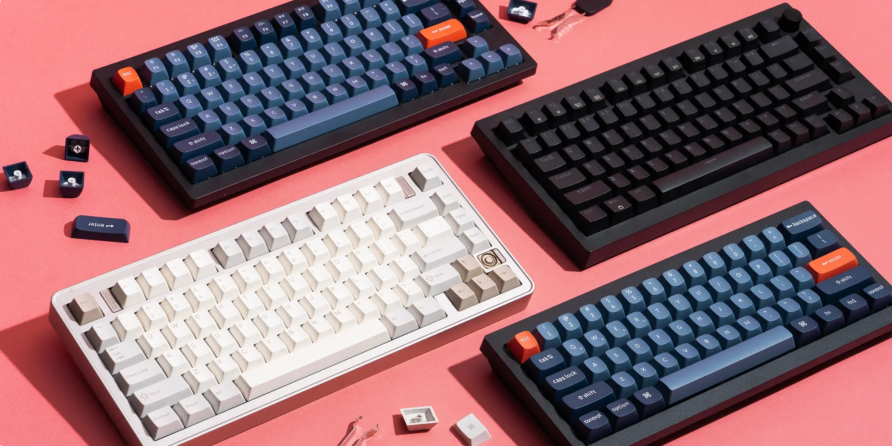

Cómo elegir tu primer teclado 60%

Un teclado 60% elimina el teclado numérico, la fila de función (F1-F12) y las teclas de navegación, dejando solo el bloque alfanumérico principal. La primera reacción de casi todos los que lo prueban es la misma: "¿cómo hago Home o las flechas?". La respuesta está en la tecla Fn: combinada con otras teclas, replica todo lo que "falta" — por ejemplo Fn + W/A/S/D suele mapearse a las flechas de dirección en muchos layouts.
¿Por qué alguien elegiría un formato así? Principalmente por dos razones: espacio en el escritorio (deja mucho más lugar para mover el mouse, algo que valoran especialmente los gamers) y portabilidad (es mucho más fácil de llevar a otro lugar, o guardar cuando no lo usas).
Nuestra recomendación si es tu primer 60%: dale al menos una semana antes de decidir si te gusta — la curva de aprendizaje de los atajos con Fn es real, pero la mayoría de los usuarios terminan encontrándolo más rápido que un teclado completo, una vez que memorizan las combinaciones.
Volver al blog